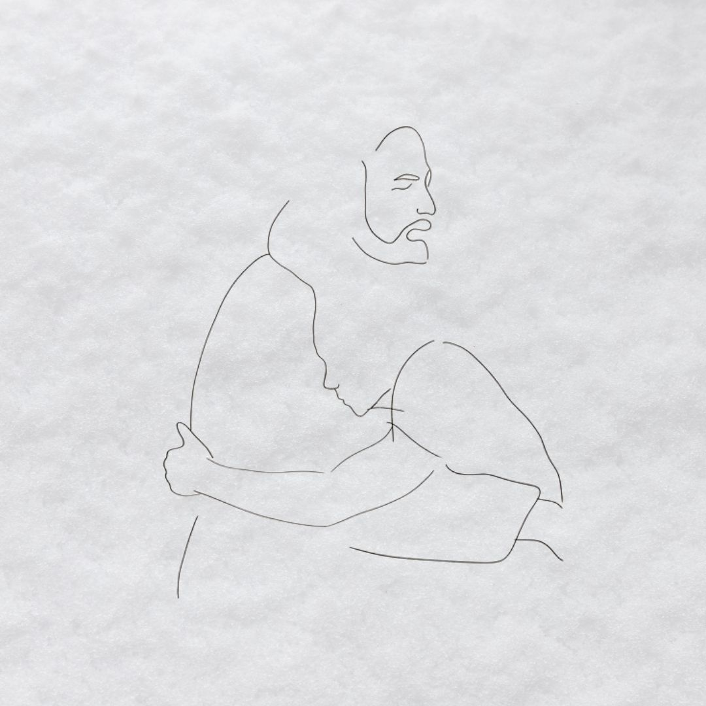
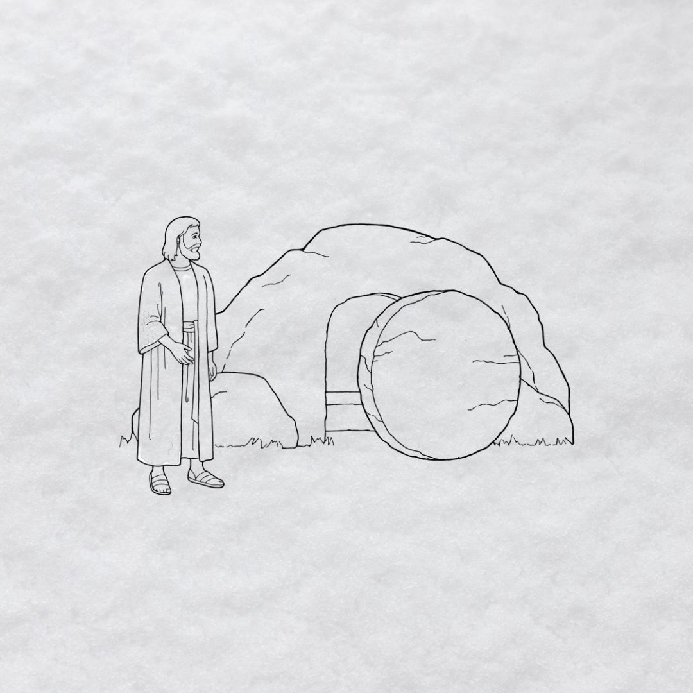

Trasmutazione dell'acqua in vino
La trasmutazione dell'acqua in vino, conosciuta anche come miracolo delle nozze di Cana, è il primo miracolo di Gesù, compiuto a Cana di Galilea. L'episodio, nel Vangelo secondo Giovanni 2:1-11, racconta dell’esaurimento delle scorte di vino durante il festeggiamento di un matrimonio e della preoccupazione che ciò generò nei servitori. Maria, madre di Gesù, chiese aiuto al figlio che, nonostante il suo essere inizialmente contrariato, decise di risolvere la problematica riempiendo dei recipienti d’acqua e trasformandola in vino. Quest’episodio è metafora e prologo di un incredibile cambiamento. Proprio come l’acqua, insapore e inodore, la vita fino a quel momento era scialba, fatta di regole e giudizi: necessitava di un po’ di gusto. Gesù, mandato da Dio, non solo cambiò il mood di quel matrimonio ma il mondo intero, dandogli odore e colore. Ciò che permette all’uva di diventare vino è la spremitura e la vita di Gesù è allegoria di questo processo. Sopportò sofferenze e umiliazioni, si fece servo e fu disposto a essere spremuto, come uva, perché sapeva che ne sarebbe valsa la pena e che a godere il quel sacrificio, di quel vino prezioso, saremmo stati noi. Con il suo primo miracolo Gesù diede uno spoiler di come sarebbe stata la vita con lui: da triste, fredda e senza colore a rossa, viva e piena di gioia.

La tempesta si acquieta
Nell’episodio riportato nel Vangelo di Matteo 8:23-27, Gesù decide di allontanarsi in barca con i suoi discepoli. Mentre navigavano si sollevò in mare una gran burrasca, tanto che la barca fu coperta dalle onde; ma Gesù dormiva. I suoi discepoli, avvicinatosi, lo svegliarono urlando e chiedendo aiuto perché si sentivano perduti. Svegliatosi, Gesù, chiese perché avessero paura e alzatosi, sgridò i venti e il mare, e la tempesta si acquietò. L’equipaggio della barca non era composto da gente inesperta; Pietro, Giacomo e Giovanni erano pescatori, gente di mare che conosceva bene quelle acque, ma nonostante ciò la paura ebbe il sopravvento. La nostra mente potrebbe portarci a credere di essere in grado di affrontare circostanze difficili (lavoro, studio, salute) senza l’aiuto di nessuno, solo con le nostre capacità. Come avvenne per i discepoli, però, è proprio di fronte alle difficoltà più grandi, quelle che sembrano onde impossibili da cavalcare, che ci rendiamo conto di quanto insufficiente sia l’impegno umano e con tutta la nostra voce gridiamo: Signore, salvami. La figura di Gesù è estremamente rassicurante e quest’episodio mostrò ai discepoli che la Sua presenza era garanzia di sicurezza e che non esisteva alcun rischio di affondare. Anche quando ci sentiamo piccoli rispetto al mare in tempesta, non abbiamo alcun motivo di preoccuparci perché la nostra fiducia risiede nella Sua presenza all’interno della nostra barca.
Moltiplicazione dei pani e dei pesci
Ci troviamo in Matteo 14:13. Si stava facendo sera quando i discepoli chiesero a Gesù di licenziare la folla che veniva da ogni parte per ascoltare i suoi insegnamenti. Gesù, però, anziché congedare gli ascoltatori chiese ai discepoli di dare loro da mangiare, cosa impossibile umanamente perché li in mezzo non vi erano solo cinque pani e due pesci. Presa la cesta contenente i pochi cibi, Gesù chiese alla folla di accomodarsi, benedisse i pani e i pesci e chiese ai discepoli di distribuirli. Cinquemila uomini senza contare donne e bambini mangiarono quella sera. Un miracolo assurdo che mostra il modo in cui Gesù si prende cura della gente. La sua compassione non ha discriminazioni. Il pane, metafora della Sua parola (la Bibbia), in quell’episodio sfamò tutti i presenti, sottolineando che la salvezza è aperta a tutti. Importante è anche l’aiuto dei dodici, che furono gli “strumenti” che permisero alla gente di attingere alla cesta. Spesso ignoriamo la possibilità di essere strumenti nelle mani di Dio che hanno il compito di parlare, raccontare e divulgare la bellezza della Bibbia.

Guarigione di una donna con afflussi di sangue
In Marco 5:25 leggiamo che Gesù si stava recando a soccorrere una bambina. Mentre camminava, circondato da una gran folla, una donna che aveva perdite di sangue da dodici anni, e aveva speso tutti i suoi beni per cercare una cura, Lo toccò. La donna, mossa da una gran fede, pensò che se avesse toccato anche solo il lembo della veste di Gesù sarebbe stata guarita. A quel tempo chi soffriva di tale malattia non poteva stare in mezzo al popolo, era costretto a vivere al di fuori delle mura, perché considerato impuro e causa di un possibile contagio. Il desiderio di guarigione della donna e la fede in Colui che l’avrebbe potuta guarire, però, furono più grandi della vergogna e del giudizio. Senza paura, con lo sguardo fisso verso Gesù, la donna si fece spazio in mezzo agli uomini per riuscire finalmente a toccare quel lembo. Con un solo tocco la sua emorragia stagnò e Gesù, incredibilmente colpito, le disse che era stata proprio la sua fede ad averla guarita. Troppo spesso ci lasciamo limitare da ciò che la gente potrebbe pensare di noi. Viviamo in una società in cui facilmente si giudica e la verità è che la fede è proprio per i coraggiosi, per chi sa andare oltre la paura dei giudizi. Solo volgendo lo sguardo su Gesù, senza guardare ne a destra ne a sinistra, possiamo ricevere il miracolo che tanto desideriamo. Egli guarisce ancora oggi, basta avere fede come questa donna.
Risurrezione di Lazzaro
Un uomo di nome Lazzaro si ammalò e le sue sorelle, Marta e Maria, fecero chiamare Gesù, che era loro amico. Egli però non accorse subito in loro aiuto, aspettò qualche giorno e poi si incamminò verso la loro casa. Quando arrivò, seppe che Lazzaro era già morto da ben 4 giorni. Rattristato nel cuore, Gesù incoraggiò le sorelle affermando che Lazzaro sarebbe risuscitato. Così, dopo aver rimosso la pietra del sepolcro, alzati gli occhi al cielo Gesù ringraziò il Padre in anticipo per il miracolo che avrebbe compiuto e chiamò il suo amico dicendo:”Lazzaro, vieni fuori!”. L’amico uscì e la gente non credette a ciò che stava accadendo. Quante situazioni pensiamo siano morte? Quali sono le cose che crediamo sia impossibile far risorgere? A volte è più semplice mettere pietre davanti ai nostri sepolcri lasciando morire determinate situazioni, ma Gesù è la speranza che ci incoraggia a non mollare. Egli potrebbe chiederci di rimuovere quella pietra tanto pesante; un gesto faticoso che ci spinge a uscire dalla nostra zona di comfort e a compiere uno sforzo, che però, paragonato al miracolo che otterremo, è incredibilmente minimo. Abbassare l’orgoglio, amare i propri nemici o perdonare sono scelte coraggiose, che ci scomoderanno parecchio, ma è proprio questa la chiave che ci permetterà di vivere il miracolo che tanto attendiamo. L’attesa è solo un tempo di preparazione a qualcosa che lascerà tutti affascinati dalla potenza della fede.
